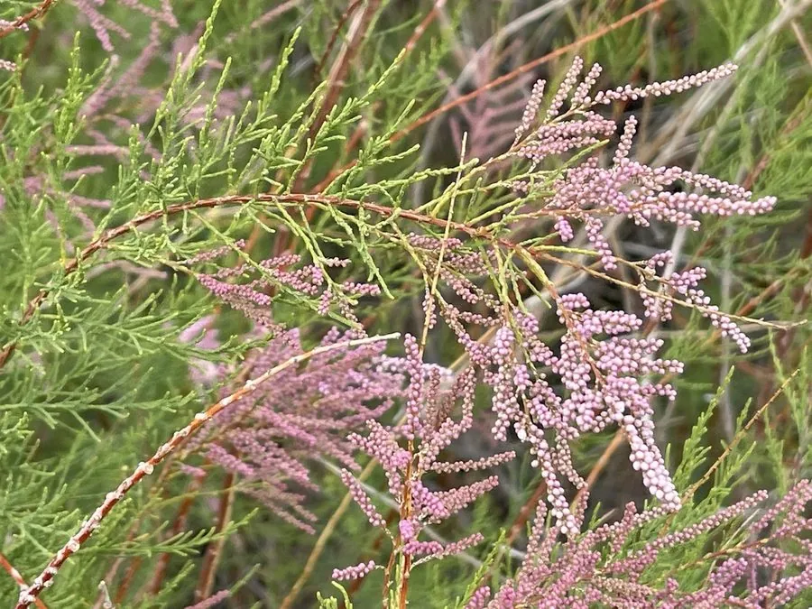

灌木与花木 · 植物界
柽柳 Tamarix chinensis

中国北方盐碱地与荒漠河岸常见的落叶灌木，枝条细柔、花粉红色，耐盐碱耐干旱，是防风固沙的优良树种。
- 分类
- 门被子植物门纲木兰纲目石竹目科柽柳科属柽柳属
- 栖息环境
- 海拔 3000 米以下的盐碱地、沙地与荒漠河岸，耐旱耐盐碱
- 地理分布
- 中国华北、西北及东北的盐碱地与河岸，中亚、蒙古也有分布
- 保护级别
- 暂无评估；中国未列入国家重点保护野生植物名录
物种志
柽柳为落叶灌木或小乔木，高可达 5 m，枝条细长、红褐色，叶鳞片状、抱茎生长；花期 4–9 月，一年可开三次花，故又称“三春柳”；总状花序生于当年生枝上，花小、粉红色，密集如穗。蒴果小，成熟时开裂，种子细小、具毛，可随风传播。
柽柳分布于中国华北、西北及东北的盐碱地、沙地与河岸，也见于中亚、蒙古，喜光、耐寒、耐旱、耐盐碱，能从盐碱地中吸收水分，被称为“盐碱地卫士”。枝条可编织筐篮，嫩枝叶可作饲料，树皮可入药；柽柳林能防风固沙、改良盐碱地，是荒漠化治理与河岸固沙的重要树种。新疆塔里木河沿岸的红柳与胡杨、梭梭共同构成荒漠河岸植被，红柳花蜜也是当地著名的蜜源。
形态与习性
- 株高可达 5 m，枝条红褐色
- 花期4–9 月，一年可多次开花
- 果期6–10 月，蒴果开裂
- 光照喜光，不耐长期荫蔽
- 水分耐旱，也耐盐碱
- 土壤盐碱土、沙土
- 主要用途防风固沙与盐碱地改良、枝条编织、嫩枝叶作饲料
趣味知识
- 柽柳一年可开三次花，因此又被称为“三春柳”。
- 柽柳耐盐碱，能在含盐量较高的土壤中生长，被称为“盐碱地卫士”。
- 新疆塔里木河沿岸的红柳与胡杨、梭梭共同构成荒漠河岸植被。
- 柽柳的枝条细长红褐色，可编织筐篮，花蜜也是当地重要蜜源。